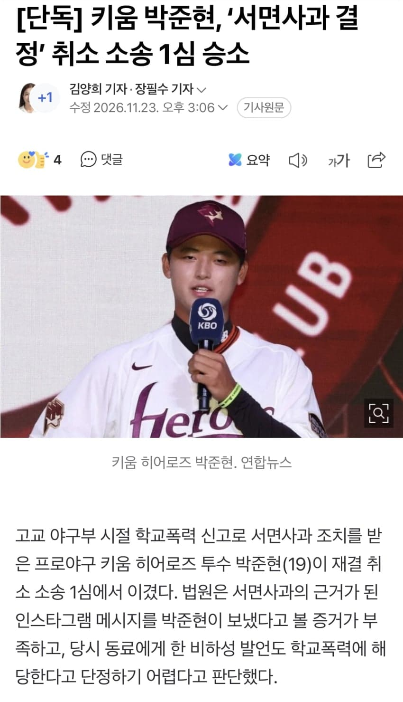
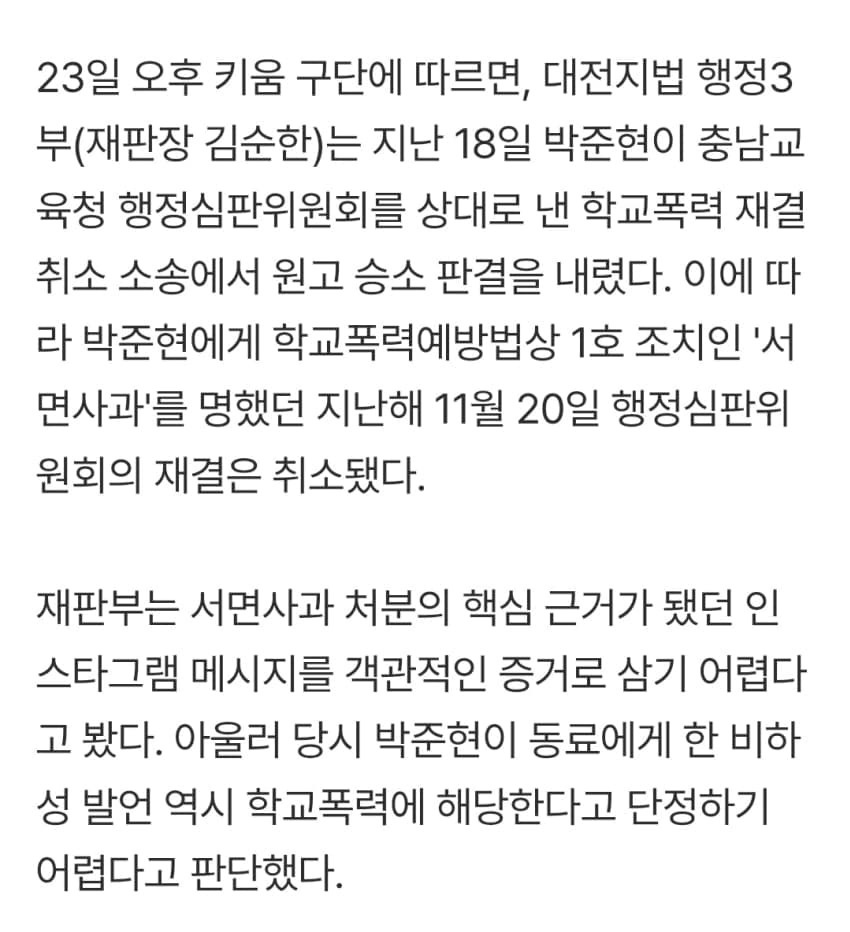

- 관련게시물 : 박준현, 학폭 논란 재점화.gisa
- 관련게시물 : 박준현 "하지도 않은 일 사과 못한다"
- 관련게시물 : 준현이 학폭무죄각 기사떴다 디스패치




고교 시절 학폭(학교폭력) 관련 서면사과 조치를 받았던 키움 히어로즈 소속 투수 박준현이 재결 취소 소송 1심에서 승소했다.
대전지법 행정3부(재판장 김순한)는 지난 18일 박준현 측이 충남교육청 행정심판위원회를 상대로 낸 학폭 재결 취소 소송에서 원고 승소 판결을 내렸다. 재판부는 충남교육청 행정심판위원회가 지난해 11월 박준현에게 학교폭력예방법상 1호 조치인 서면사과를 하도록 한 행정심판 재결을 취소했다.
지난해 9월 신인 드래프트 전체 1순위로 키움 지명을 받은 박준현은 프로 입성 전후로 학폭 논란에 휩싸였다. 고교(천안 북일고) 시절 야구부 동료 A를 괴롭혔다는 의혹을 받은 것. 2025년 7월 기준으로 충남천안교육지원청은 '학폭 없음'으로 결정했지만, 지난해 12월 충남교육청 행정심판위원회는 '학폭 행위 인정'으로 판단을 뒤집고 학폭 조치 1호 처분을 내렸다. 자신의 결백을 주장한 박준현은 서면사과 이행 대신 행정심판위원회 재결에 대해 행정소송을 제기했다.
당시 박준현의 법률대리인은 입장문을 통해 "인정된 사실관계는 오로지 2023년 초 친구에게 '여미새(여자에 미친 사람)'라는 발언을 한차례 한 것이다. 선수(박준현)가 학교 야구부의 따돌림을 주도하였다거나 지속적 괴롭힘을 하였다는 상대방 주장은 행정심판에서도 인정되지 않았다"라며 법적 절차를 선택한 배경을 전했다. 행정심판 재결에서 추가로 인정된 사실관계(소셜미디어 다이렉트 메시지 욕설)에 대해서도 부인한 바 있다.
재판부는 '피고가 행정심판 단계에서 이 사건 다이렉트 메시지 발송행위를 처분사유로 추가하는 것은 허용되지 않는다고 봄이 타당하다. 따라서 이 사건 DM 발송행위를 처분사유로 삼을 수 없다'라고 판단했다. 이어 '참가인(A)은 2023년부터 원고에게 지속적으로 언어폭력 및 왕따를 당했다고 주장하며 원고를 학교폭력으로 신고한 이후, 학교폭력 전담기구의 사안 조사 및 이 사건 위원회의 심의 과정에서 원고의 언어폭력 및 따돌림 행위에 관하여 예시와 함께 상당히 구체적으로 진술하였는데, 이 사건 DM 발송행위는 언급한 사실이 없다. 그 결과 이 사건 위원회의 심의 단계에서 이 사건 DM 발송행위의 사실 여부나 학교폭력 해당 여부에 관한 논의는 전혀 이루어지지 않았다'라고 봤다. A가 제출한 캡처 화면에 메시지를 보낸 날짜가 드러나 있지 않아, 발송 시점이 2023년인지 특정할 수 없는 점도 언급하며 '참가인이 당초 학교폭력으로 주장했던 원고의 욕설 행위와 이 사건 DM 발송행위의 기초가 되는 사실관계가 반드시 동일하다고 단정할 수 없다'라고 했다.
박준현이 A에게 여미새라고 발언한 것에 대해서도 재판부는 ' 학교폭력예방법에 따른 학교폭력에 해당한다고 단정하기 어려우므로, 이 부분 처분사유도 인정할 수 없다'라고 했다. A가 한 때 박준현과 가까이 지냈던 사이에 들었던 말이라는 점에서 '또래 학생들의 언어습관 내지 언어문화 등에 비추어 친한 친구 사이에서 흔하게 사용하는 말로 평가할 여지가 있다'라고 인정했다.
충남교육청이 항소하지 않을 경우 박준현은 학폭 관련 의혹에서 벗어나게 된다. 곱지 않은 시선 속에 치른 데뷔 시즌(2026) 그는 22경기에 등판해 1승 10패 평균자책점 5.75를 기록했다.
댓글
수집 당시 댓글 45개
.. · 11.23 15:02:21
큠갤러1 · 11.23 15:03:02
큠갤러2 · 11.23 15:03:29
ㅇㅇ · 11.23 15:06:31
큠갤러3 · 11.23 15:09:18
ㅇㅇ · 11.23 15:10:01
큠갤러4 · 11.23 15:10:22
ㅇㅇ · 11.23 15:12:00
큠갤러5 · 11.23 15:18:59
ㅇㅇ · 11.23 15:21:36
큠갤러6 · 11.23 15:23:07
ㅇㅇ · 11.23 15:23:14
큠갤러7 · 11.23 15:27:53
ㅇㅇ · 11.23 15:29:17
슈붕 · 11.23 15:32:14
ㅇㅇ · 11.23 15:33:10
왁현승 · 11.23 15:34:55
ㅇㅇ · 11.23 15:36:57
눈잉 · 11.23 15:37:05
ㅇㅇ · 11.23 15:37:06
· 큠갤러8 · 11.23 15:51:43
ㅇㅇ · 11.23 15:55:57
큠갤러9 · 11.23 16:21:42
ㅇㅇ · 11.23 16:56:24
강아지 · 11.23 17:44:54
ㅇㅇ · 11.23 18:22:23
큠갤러10 · 11.23 19:01:18
봇치쟝 · 11.23 19:15:37
메챠코 · 11.23 19:16:31
ㅇㅇ · 11.23 19:17:19
ㄹㅇㅋㅋ · 11.23 19:19:31
· ㅇㅇ · 11.23 19:38:56
해나이 · 11.23 19:21:27
ㅇㅇ · 11.23 19:21:42
ㅇㅇ · 11.23 19:22:48
123 · 11.23 19:26:31
ㅇㅇ · 11.23 19:27:45
ㅇㅇ · 11.23 19:31:02
ㅇㅇ · 11.23 19:39:40
히이잉 · 11.23 19:48:35
ㅇㅇ · 11.23 19:58:09
ㅇㅇ · 11.23 19:58:28
ㅇㅇ · 11.23 20:00:43
· ㅇㅇ · 11.23 20:19:41
ㅇㅇ · 11.23 20:24:47